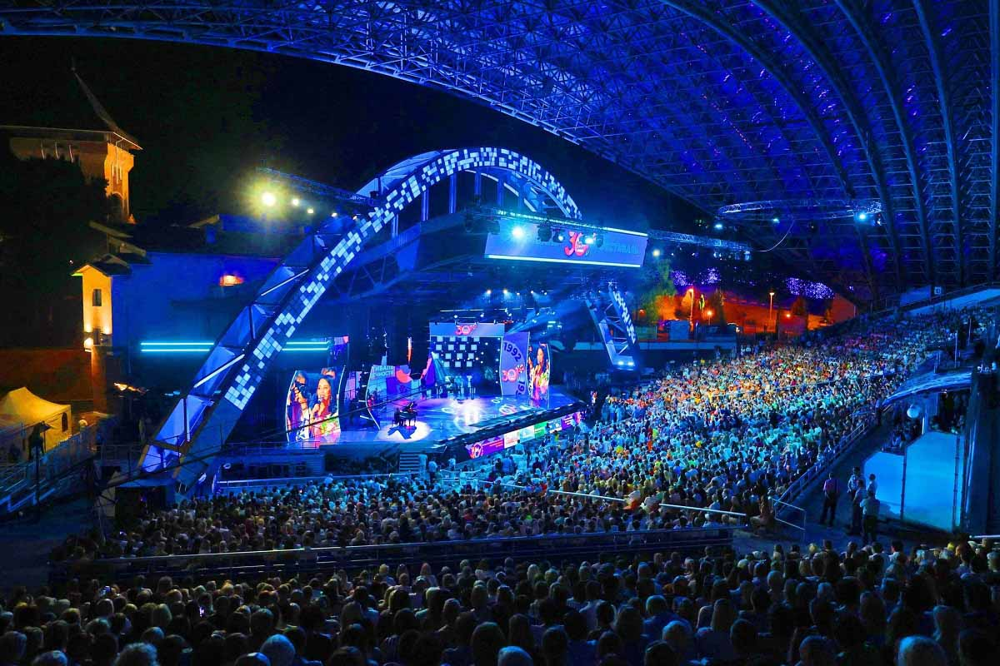
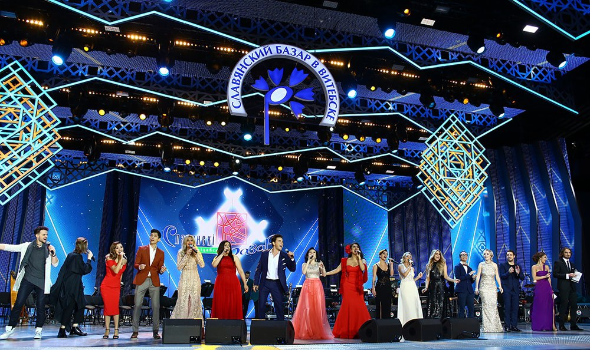

.
Славянский базар


Международный фестиваль искусств "Славянский базар в Витебске" является
визитной карточкой Республики Беларусь. На протяжении многих лет
музыкальный форум способствует развитию диалога культур между различными
народами и странами. 18 июля 1992 года в Витебске прошел первый фестиваль
искусств. У его истоков стояло три государства – Беларусь, Россия и
Украина. Целью стран-организаторов было ознакомить витебчан и гостей
города с песенным творчеством славянских народов. В 1993 году фестиваль
"Славянский базар" стал членом Международной федерации организаторов
фестивалей (FIDOF). В этом же году расширилась и география участников: на
флагштоке фестиваля впервые появились флаги Словакии, Кыргызстана, Литвы,
Турции, Болгарии, Югославии. С 1995 года фестиваль проводится под личным
патронатом Президента Республики Беларусь Александра Лукашенко. С этого же
года "Славянский базар" стал называться "Международным фестивалем
искусств". В 1996 году фестиваль впервые транслировался по системе
спутникового телевидения, что сделало просмотр праздника искусств
доступным жителям всей планеты. В 2009 году состоялось открытие Аллеи
лауреатов, удостоенных Специальной награды Президента Республики Беларусь
"Через искусство – к миру и взаимопониманию". В 2011 году прошел юбилейный
XX Международный фестиваль искусств "Славянский базар в Витебске". За 20
лет в городе Витебске побывали более 55 тысяч участников из 68 стран мира.
На главной сцене "Славянского базара в Витебске" – в Летнем aмфитеатре –
состоялись 316 концертов, которые посетили около трех миллионов зрителей.
Главной интригой фестиваля на протяжении всего времени его существования
является международный конкурс исполнителей эстрадной песни "Витебск".
Также в рамках фестиваля проходят международный детский музыкальный
конкурс, кино- и театральные программы. Фестиваль невозможно представить
без вернисажа под открытым небом, где выставляются прекрасные работы
современных художников, без города мастеров, в котором представлены
народные промыслы. На фестивале традиционно проходят День Союзного
государства, гала-концерты мастеров культуры Беларуси, России, Украины,
программы "Фестиваль без границ", "Театральные встречи", "Звездный час". В
2000 году фестиваль установил рекорд, собрав на сцене представителей
абсолютно всех славянских народов, живущих на земле. Фестиваль дважды
признавался FIDOF "Лучшим фестивалем года" в 2000 и 2004 годах. В 2005 в
Витебске состоялась Ассамблея этой международной федерации, что стало
признанием высокого уровня проведения "Славянского базара в Витебске".